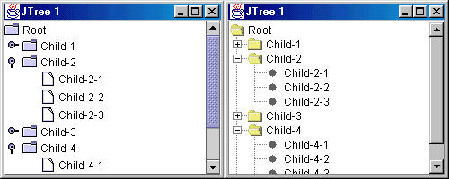
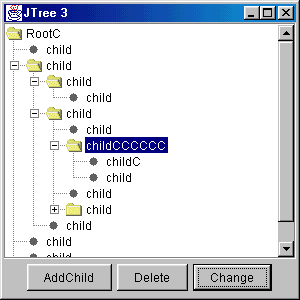

39.3 JTree
39.3.1 Erzeugen eines Baums
Nach JTable
ist JTree
die zweite der »großen« Elementarkomponenten in Swing.
Sie dient zur Darstellung, Navigation und Bearbeitung baumartiger,
hierarchischer Datenstrukturen.
Ein einfaches Beispiel für derartige Baumstrukturen stellt etwa
das Dateisystem unter UNIX oder Windows dar. Es besteht aus einer
Wurzel (dem Root-Verzeichnis) und darin enthaltenen Unterverzeichnissen.
Die Unterverzeichnisse können ihrerseits weitere Unterverzeichnisse
enthalten usw. Dadurch entsteht eine geschachtelte Struktur von Verzeichnissen,
die baumartig durchlaufen und bearbeitet werden kann. Andere Beispiele
für Baumstrukturen sind die syntaktischen Elemente einer Programmiersprache,
die Aufbauorganisation eines Unternehmens oder das Inhaltsverzeichnis
in einem Buch.
Im Umgang mit Bäumen haben sich folgende Begriffe eingebürgert:
- Ein Element des Baums wird als Knoten bezeichnet.
- Die in einem Knoten enthaltenen Elemente bezeichnet man als Unterknoten,
manchmal auch als Kindknoten.
- Das übergeordnete Element eines Knotens bezeichnet man als
Vaterknoten, manchmal auch als Elternknoten.
- Das Startelement des Baums wird Wurzel genannt.
- Knoten, die keine Unterknoten haben, werden als Blätter
bezeichnet.
- Knoten, die sowohl Vater- als auch Unterknoten enthalten, bezeichnet
man als innere Knoten.
Der eigentliche Aufwand beim Erzeugen eines Baums liegt im Aufbau
eines passenden Datenmodells, das seiner Struktur nach meist ebenfalls
hierarchisch ist. Das Instanzieren des JTree
ist dann vergleichsweise einfach. Die beiden wichtigsten Konstruktoren
der Klasse JTree
sind:
Der erste von beiden erwartet ein vordefiniertes TreeModel
zur Darstellung der Elemente des Baums. Ein TreeModel
kapselt alle relevanten Informationen über die Struktur des Baums.
Es liefert auf Anfrage dessen Wurzel, stellt Informationen über
einen bestimmten Knoten zur Verfügung oder liefert dessen Unterknoten.
An den zweiten Konstruktor wird lediglich die Wurzel des Baums übergeben.
Sie wird vom Konstruktor automatisch in ein geeignetes TreeModel
eingebettet. Beide Varianten sind prinzipiell gleichwertig. Zwar erfragt
der JTree
die zur Darstellung und Navigation erforderlichen Daten immer beim
TreeModel.
Aber das mit der Baumwurzel des zweiten Konstruktors instanzierte
DefaultTreeModel
ist in der Lage, diese Informationen aus den Knoten und den darin
gespeicherten Verweisen auf ihre Unterknoten zu entnehmen (alle nötigen
Informationen werden in den TreeNodes
selbst gehalten). Wir werden später auf beide Arten, Bäume
zu konstruieren, noch genauer eingehen.
Ein JTree
besitzt nicht so viele Konfigurationsoptionen wie eine JTable.
Die wichtigste von ihnen regelt, ob die Wurzel des Baums bei seiner
Darstellung angezeigt oder unterdrückt werden soll. Auf sie kann
mit den Methoden setRootVisible
und isRootVisible
zugegriffen werden:
public void setRootVisible(boolean rootVisible)
public boolean isRootVisible()
|
javax.swing.JTree |
Wir wollen uns zunächst ein einfaches Beispiel ansehen. Das folgende
Programm erzeugt eine rekursive Baumstruktur mit Wurzel und zwei Unterebenen,
deren Knoten aus Objekten des Typs DefaultMutableTreeNode
bestehen. Diese im Paket javax.swing.tree
gelegene Klasse ist eine Standardimplementierung des TreeNode-Interface,
das beschreibt, wie ein Knoten Informationen über seine Unter-
und Vaterknoten zur Verfügung stellen kann. Die vier wichtigsten
Methoden von TreeNode
sind:
public int getChildCount()
public TreeNode getChildAt(int childIndex)
public TreeNode getParent()
public boolean isLeaf()
|
javax.swing.tree.TreeNode |
Mit getChildCount
kann die Anzahl der Unterknoten ermittelt werden. Sie werden von 0
an durchnummeriert, getChildAt
liefert einen beliebigen Unterknoten. Ein Knoten kennt seinen Vaterknoten,
der mit getParent
ermittelt werden kann. Mit isLeaf
kann zudem abgefragt werden, ob ein Knoten ein Blatt ist oder weitere
Unterknoten enthält. Zur Beschriftung des Knotens bei der visuellen
Darstellung verwendet ein JTree
die Methode toString
der Knotenklasse.
Mit DefaultMutableTreeNode
steht eine recht flexible Implementierung von TreeNode
zur Verfügung, die auch Methoden zum Einfügen und Löschen
von Knoten bietet (sie implementiert übrigens das aus TreeNode
abgeleitete Interface MutableTreeNode):
public DefaultMutableTreeNode(Object userObject)
public void add(MutableTreeNode newChild)
public void insert(MutableTreeNode newChild, int childIndex)
public void remove(int childIndex)
public void removeAllChildren()
public void setUserObject(Object userObject)
public Object getUserObject()
|
javax.swing.tree.DefaultMutableTreeNode |
Mit add
wird ein neuer Kindknoten an das Ende der Liste der Unterknoten angefügt,
mit insert
kann dies an einer beliebigen Stelle erfolgen. remove
entfernt einen beliebigen und removeAllChildren
alle Kindknoten. Anwendungsbezogene Informationen werden in einem
UserObject gehalten, das direkt an den Konstruktor übergeben
werden kann. Mit setUserObject
und getUserObject
kann später darauf zugegriffen werden. Das UserObject ist auch
der Lieferant für die Knotenbeschriftung: jeder Aufruf von toString
wird an das UserObject weitergeleitet.
Das folgende Programm erzeugt eine Wurzel mit fünf Unterknoten,
die jeweils drei weitere Unterknoten enthalten. Anschließend
wird der Wurzelknoten an den Konstruktor eines JTree
übergeben und dieser durch Einbetten in eine JScrollPane
(um automatisches Scrollen zu ermöglichen) in einem JFrame
platziert.
001 /* Listing3911.java */
002
003 import java.awt.*;
004 import java.awt.event.*;
005 import javax.swing.*;
006 import javax.swing.tree.*;
007
008 public class Listing3911
009 extends JFrame
010 {
011 public Listing3911()
012 {
013 super("JTree 1");
014 addWindowListener(new WindowClosingAdapter(true));
015 //Einfaches TreeModel bauen
016 DefaultMutableTreeNode root, child, subchild;
017 root = new DefaultMutableTreeNode("Root");
018 for (int i = 1; i <= 5; ++i) {
019 String name = "Child-" + i;
020 child = new DefaultMutableTreeNode(name);
021 root.add(child);
022 for (int j = 1; j <= 3; ++j) {
023 subchild = new DefaultMutableTreeNode(name + "-" + j);
024 child.add(subchild);
025 }
026 }
027 //JTree erzeugen
028 JTree tree = new JTree(root);
029 tree.setRootVisible(true);
030 //JTree einfügen
031 Container cp = getContentPane();
032 cp.add(new JScrollPane(tree), BorderLayout.CENTER);
033 }
034
035 public static void main(String[] args)
036 {
037 Listing3911 frame = new Listing3911();
038 frame.setLocation(100, 100);
039 frame.setSize(250, 200);
040 frame.setVisible(true);
041 }
042 }
|
Listing3911.java |
Listing 39.11: Ein einfacher JTree
Mit aufgeklapptem zweiten und vierten Knoten sieht das Programm wie
in Abbildung 39.9 dargestellt
aus. Auf der linken Seite wird der Baum im Metal-, auf der rechten
im Windows-Look-and-Feel gezeigt.

Abbildung 39.9: Ein einfacher JTree im Metal- und Windows-Look-and-Feel
39.3.2 Selektieren von Knoten
Konfiguration der Selektionsmöglichkeit
Das Selektieren von Knoten wird durch das TreeSelectionModel
gesteuert, auf das mit Hilfe der Methoden setSelectionModel
und getSelectionModel
zugegriffen werden kann:
public void setSelectionModel(TreeSelectionModel selectionModel)
public TreeSelectionModel getSelectionModel()
|
javax.swing.JTree |
Standardmäßig erlaubt ein JTree
das Selektieren mehrerer Knoten. Soll die Selektionsmöglichkeit
auf einen einzelnen Knoten beschränkt werden, muss ein eigenes
TreeSelectionModel
an setSelectionModel
übergeben werden. Dazu kann eine Instanz der Klasse DefaultTreeSelectionModel
erzeugt und durch Aufruf von setSelectionMode
und Übergabe einer der Konstanten SINGLE_TREE_SELECTION,
CONTIGUOUS_TREE_SELECTION
oder DISCONTIGUOUS_TREE_SELECTION
konfiguriert werden:
Abfragen der Selektion
JTree
stellt eine Reihe von Methoden zur Verfügung, mit denen abgefragt
werden kann, ob und welche Knoten selektiert sind. Die wichtigsten
von ihnen sind:
public TreePath getSelectionPath()
public TreePath[] getSelectionPaths()
public TreePath getLeadSelectionPath()
|
javax.swing.JTree |
Mit getSelectionPath
wird das selektierte Element ermittelt. Bei aktivierter Mehrfachselektion
liefert die Methode das erste aller selektierten Elemente. Ist kein
Knoten selektiert, wird null
zurückgegeben. getSelectionPaths
gibt ein Array mit allen selektierten Knoten zurück. getLeadSelectionPath
liefert das markierte Element.
Alle beschriebenen Methoden liefern Objekte des Typs TreePath.
Diese Klasse beschreibt einen Knoten im Baum über den Pfad, der
von der Wurzel aus beschritten werden muss, um zu dem Knoten zu gelangen.
Mit getLastPathComponent
kann das letzte Element dieses Pfads bestimmt werden. In unserem Fall
ist das gerade der selektierte Knoten. Mit getPath
kann der komplette Pfad ermittelt werden. An erster Stelle liegt dabei
die Wurzel des Baums, an letzter Stelle das selektierte Element:
Soll ermittelt werden, ob und welche Elemente im Baum selektiert sind,
können die Methoden isSelectionEmpty
und isPathSelected
aufgerufen werden:
public boolean isSelectionEmpty()
public boolean isPathSelected(TreePath path)
|
javax.swing.JTree |
Dient der JTree
zur Steuerung anderer Komponenten (etwa in explorerartigen Oberflächen),
muss das Programm meist unmittelbar auf Änderungen der Selektion
durch den Anwender reagieren. Dazu kann es einen TreeSelectionListener
instanzieren und ihn mit addTreeSelectionListener
beim JTree
registrieren. Bei jeder Selektionsänderung wird dann die Methode
valueChanged
aufgerufen und bekommt ein TreeSelectionEvent
als Argument übergeben:
Dieses stellt unter anderem die Methoden getOldLeadSelectionPath
und getNewLeadSelectionPath
zur Verfügung, um auf den vorherigen oder aktuellen Selektionspfad
zuzugreifen:
Das folgende Programm erweitert Listing 39.11
um die Fähigkeit, das selektierte Element auf der Konsole auszugeben.
Dazu definiert es ein TreeSelectionModel
für Einfachselektion und fügt einen TreeSelectionListener
hinzu, der jede Selektionsänderung dokumentiert:
001 /* Listing3912.java */
002
003 import java.awt.*;
004 import java.awt.event.*;
005 import javax.swing.*;
006 import javax.swing.event.*;
007 import javax.swing.tree.*;
008
009 public class Listing3912
010 extends JFrame
011 {
012 public Listing3912()
013 {
014 super("JTree 2");
015 addWindowListener(new WindowClosingAdapter(true));
016 //Einfaches TreeModel bauen
017 DefaultMutableTreeNode root, child, subchild;
018 root = new DefaultMutableTreeNode("Root");
019 for (int i = 1; i <= 5; ++i) {
020 String name = "Child-" + i;
021 child = new DefaultMutableTreeNode(name);
022 root.add(child);
023 for (int j = 1; j <= 3; ++j) {
024 subchild = new DefaultMutableTreeNode(name + "-" + j);
025 child.add(subchild);
026 }
027 }
028 //JTree erzeugen und Einfachselektion aktivieren
029 JTree tree = new JTree(root);
030 TreeSelectionModel tsm = new DefaultTreeSelectionModel();
031 tsm.setSelectionMode(TreeSelectionModel.SINGLE_TREE_SELECTION);
032 tree.setSelectionModel(tsm);
033 tree.setRootVisible(true);
034 //JTree einfügen
035 Container cp = getContentPane();
036 cp.add(new JScrollPane(tree), BorderLayout.CENTER);
037 //TreeSelectionListener hinzufügen
038 tree.addTreeSelectionListener(
039 new TreeSelectionListener()
040 {
041 public void valueChanged(TreeSelectionEvent event)
042 {
043 TreePath tp = event.getNewLeadSelectionPath();
044 if (tp != null) {
045 System.out.println(" Selektiert: " + tp.toString());
046 } else {
047 System.out.println(" Kein Element selektiert");
048 }
049 }
050 }
051 );
052 }
053
054 public static void main(String[] args)
055 {
056 try {
057 Listing3912 frame = new Listing3912();
058 frame.setLocation(100, 100);
059 frame.setSize(250, 200);
060 frame.setVisible(true);
061 } catch (Exception e) {
062 }
063 }
064 }
|
Listing3912.java |
Listing 39.12: Ein JTree mit TreeSelectionListener
Verändern der Selektion
Die Selektion kann auch programmgesteuert verändert werden:
public void clearSelection()
public void addSelectionPath(TreePath path)
public void addSelectionPaths(TreePath[] paths)
public void setSelectionPath(TreePath path)
public void setSelectionPaths(TreePath[] paths)
|
javax.swing.JTree |
Mit clearSelection
wird die Selektion vollständig gelöscht. Mit addSelectionPath
und addSelectionPaths
kann die Selektion um ein einzelnes oder eine Menge von Knoten erweitert
werden. Mit setSelectionPath
und setSelectionPaths
werden - unabhängig von der bisherigen Selektion - die als Argument
übergebenen Knoten selektiert.
39.3.3 Öffnen und Schließen der Knoten
Der Anwender kann die Knoten mit Maus- oder Tastaturkommandos öffnen
oder schließen. Dadurch werden die Unterknoten entweder sichtbar
oder versteckt. Das Programm kann diesen Zustand mit den Methoden
isCollapsed
und isExpanded
abfragen:
public boolean isExpanded(TreePath path)
public boolean isCollapsed(TreePath path)
public boolean hasBeenExpanded(TreePath path)
public boolean isVisible(TreePath path)
public void makeVisible(TreePath path)
public void expandPath(TreePath path)
public void collapsePath(TreePath path)
|
javax.swing.JTree |
isExpanded
liefert true,
wenn der Knoten geöffnet ist, isCollapsed,
wenn er geschlossen ist. hasBeenExpanded
gibt an, ob der Knoten überhaupt schon einmal geöffnet wurde.
isVisible
gibt genau dann true
zurück, wenn der Knoten sichtbar ist, d.h., wenn alle seine Elternknoten
geöffnet sind. Mit makeVisible
kann ein Knoten sichtbar gemacht werden. Mit expandPath
kann er geöffnet und mit collapsePath
geschlossen werden.
39.3.4 Verändern der Baumstruktur
Es ist ohne Weiteres möglich, den Inhalt und die Struktur des
Baums nach dem Anlegen des JTree
zu ändern. Es können neue Knoten eingefügt, bestehende
entfernt oder vorhandene modifiziert werden. Wird die Klasse DefaultMutableTreeNode
als Knotenklasse verwendet, reicht es allerdings nicht aus, einfach
die entsprechenden Methoden zum Ändern, Einfügen oder Löschen
auf den betroffenen Knoten aufzurufen. In diesem Fall würde zwar
die Änderung im Datenmodell durchgeführt werden, aber die
Bildschirmdarstellung würde sich nicht verändern.
Änderungen im Baum müssen immer über das Modell ausgeführt
werden, denn nur dort ist der JTree
standardmäßig als TreeModelListener
registriert und wird über Änderungen unterrichtet. Werden
diese dagegen direkt auf den Knoten ausgeführt, bleiben sie dem
Modell verborgen und die Anzeige wird inkonsistent.
Für einfache Änderungen reicht es aus, eine Instanz der
Klasse DefaultTreeModel
als TreeModel
zu verwenden. Sie wird durch Übergabe des Wurzelknotens instanziert
und stellt eine Vielzahl von Methoden zum Einfügen, Löschen
und Ändern der Knoten zur Verfügung. Alle Änderungen
werden durch Versenden eines TreeModelEvent
automatisch an alle registrierten TreeModelListener
weitergegeben und führen dort zu entsprechenden Aktualisierungen
der Bildschirmdarstellung.
Die zum Ändern des Modells benötigten Methoden von DefaultTreeModel
sind:
public void insertNodeInto(
MutableTreeNode newChild,
MutableTreeNode parent,
int index
)
public void removeNodeFromParent(MutableTreeNode node)
public void nodeChanged(TreeNode node)
public TreeNode[] getPathToRoot(TreeNode aNode)
|
javax.swing.tree.DefaultTreeModel |
Mit insertNodeInto
wird ein neuer Kindknoten an einer beliebigen Position zu einem Elternknoten
hinzugefügt. Mit removeNodeFromParent
wird ein beliebiger Knoten aus dem Baum entfernt (er darf auch Unterknoten
enthalten) und nodeChanged
sollte aufgerufen werden, wenn der Inhalt eines Knotens sich so geändert
hat, dass seine Bildschirmdarstellung erneuert werden muss. getPathToRoot
schließlich ist eine nützliche Hilfsmethode, mit der das
zur Konstruktion eines TreePath-Objekts
erforderliche Knoten-Array auf einfache Weise erstellt werden kann.
Das folgende Programm zeigt einen Baum, der zunächst nur den
Wurzelknoten enthält. Dieser ist vom Typ DefaultMutableTreeNode
und wird in ein explizit erzeugtes DefaultTreeModel
eingebettet, dass an den Konstruktor des JTree
übergeben wird. Neben dem JTree
enthält das Programm drei Buttons, mit denen ein neuer Knoten
eingefügt sowie ein vorhandener gelöscht oder seine Beschriftung
geändert werden kann.
001 /* Listing3913.java */
002
003 import java.awt.*;
004 import java.awt.event.*;
005 import javax.swing.*;
006 import javax.swing.event.*;
007 import javax.swing.tree.*;
008
009 public class Listing3913
010 extends JFrame
011 implements ActionListener
012 {
013 protected DefaultMutableTreeNode root;
014 protected DefaultTreeModel treeModel;
015 protected JTree tree;
016
017 public Listing3913()
018 {
019 super("JTree 3");
020 addWindowListener(new WindowClosingAdapter(true));
021 //JTree erzeugen und Einfachselektion aktivieren
022 root = new DefaultMutableTreeNode("Root");
023 treeModel = new DefaultTreeModel(root);
024 tree = new JTree(treeModel);
025 TreeSelectionModel tsm = new DefaultTreeSelectionModel();
026 tsm.setSelectionMode(TreeSelectionModel.SINGLE_TREE_SELECTION);
027 tree.setSelectionModel(tsm);
028 tree.setRootVisible(true);
029 //JTree einfügen
030 Container cp = getContentPane();
031 cp.add(new JScrollPane(tree), BorderLayout.CENTER);
032 //ButtonPanel
033 JPanel panel = new JPanel(new FlowLayout());
034 String[] buttons = new String[]{"AddChild", "Delete", "Change"};
035 for (int i = 0; i < buttons.length; ++i) {
036 JButton button = new JButton(buttons[i]);
037 button.addActionListener(this);
038 panel.add(button);
039 }
040 cp.add(panel, BorderLayout.SOUTH);
041 }
042
043 public void actionPerformed(ActionEvent event)
044 {
045 String cmd = event.getActionCommand();
046 TreePath tp = tree.getLeadSelectionPath();
047 if (tp != null) {
048 DefaultMutableTreeNode node;
049 node = (DefaultMutableTreeNode)tp.getLastPathComponent();
050 if (cmd.equals("AddChild")) {
051 DefaultMutableTreeNode child;
052 child = new DefaultMutableTreeNode("child");
053 treeModel.insertNodeInto(child, node, node.getChildCount());
054 TreeNode[] path = treeModel.getPathToRoot(node);
055 tree.expandPath(new TreePath(path));
056 } else if (cmd.equals("Delete")) {
057 if (node != root) {
058 TreeNode parent = node.getParent();
059 TreeNode[] path = treeModel.getPathToRoot(parent);
060 treeModel.removeNodeFromParent(node);
061 tree.setSelectionPath(new TreePath(path));
062 }
063 } else if (cmd.equals("Change")) {
064 String name = node.toString();
065 node.setUserObject(name + "C");
066 treeModel.nodeChanged(node);
067 }
068 }
069 }
070
071 public static void main(String[] args)
072 {
073 try {
074 String plaf = "com.sun.java.swing.plaf.windows.WindowsLookAndFeel";
075 UIManager.setLookAndFeel(plaf);
076 Listing3913 frame = new Listing3913();
077 frame.setLocation(100, 100);
078 frame.setSize(300, 300);
079 frame.setVisible(true);
080 } catch (Exception e) {
081 }
082 }
083 }
|
Listing3913.java |
Listing 39.13: Einfügen, Ändern und Löschen in einem
Baum
Alle Button-Aktionen werden in actionPerformed
ausgeführt. Darin wird zunächst das Action-Kommando abgefragt
und dann in Zeile 046
der Pfad des selektierten Elements bestimmt. Ist dieser nicht leer,
werden die Kommandos wie folgt ausgeführt:
- Bei »AddChild« wird zunächst ein neuer Kindknoten
erzeugt und in Zeile 053
als letztes Element an den selektierten Knoten angehängt. Anschließend
wird der selektierte Knoten expandiert, um die Änderung für
den Anwender sichtbar zu machen.
- Bei »Delete« wird zunächst geprüft, ob der
zu löschende Knoten die Wurzel ist. Ist das nicht der Fall, wird
zunächst ein Pfad zum Vaterknoten beschafft und dann in Zeile 060
der selektierte Knoten gelöscht. Anschließend wird der
Vaterknoten selektiert, um auch nach der Löschung eine definierte
Selektion zu haben.
- Bei »Change« wird lediglich das bisherige UserObject
durch einen String
mit einem angehängten »C« ersetzt und in Zeile 066
nodeChanged
aufgerufen, um dem JTree
mitzuteilen, dass der Knoten neu dargestellt werden soll.
Nach einigen Einfügungen, Änderungen und Löschungen
sieht die Programmausgabe beispielsweise so aus:

Abbildung 39.10: Ein veränderbarer JTree